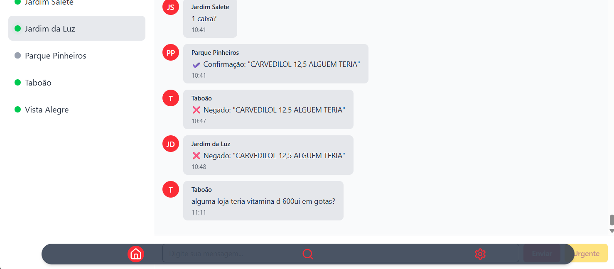
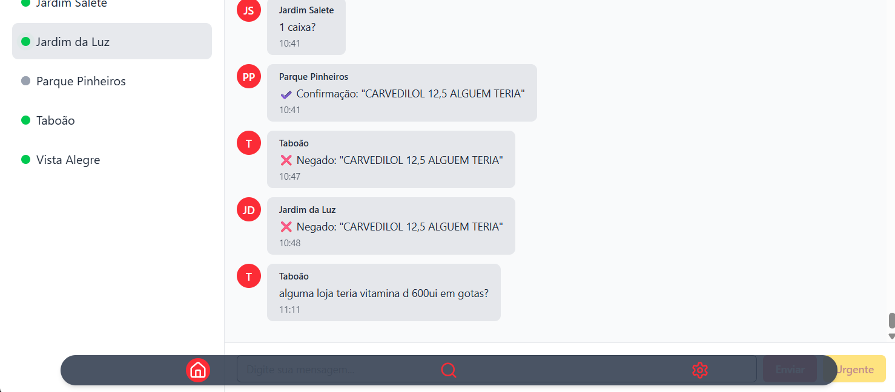

Manual Cesária.App
Este guia foi desenvolvido para ajudá-lo a navegar e utilizar todas as funcionalidades do aplicativo de forma eficiente.
Seção de Conversas
Esta é a pagina inicial do App, aqui você poderá interagir com as demais lojas da Rede através dos Chats, cada Usuário do App é listado no painel esquerdo do Aplicativo, e a conversa selecionada fica disponível logo ao lado.
- Lista de Chats: A lista de Chats, como dito antes, mostra todos os usuários do App, basta clicar em qualquer um deles para iniciar uma conversa. O Status online é indicado por um ponto verde. logo ao lado do nome de usuário, com isso, sabemos qual loja está online e disponível para te responder.
- Envio de Mensagens: Envie mensagens normais para responder por perguntas sem urgência, as mensagens normais não são notificadas de forma nenhuma, apenas ficam visíveis para os usuários que estão vendo a conversa. Você também pode e deve usar Mensagens Urgentes para notificações sonoras e visuais. Essas mensagens são notificadas para todos que a receberem, ativando um alerta sonoro e visual, para que a mensagem não passe despercebida.
 

Navegação do Sistema
A barra de tarefas é acessada pelo botão de três barras (menu hambúrguer) ou pela tecla F1, revelando opções para outras páginas do sistema. Após pressionar qualquer um dos botões, a barra surgirá na parte inferior do App, trazendo a possibilidade de navegar para outras páginas, como Solicitação de transferências e Consulta de convênios. Clicando nos botões da barra, você será imediatamente levado para a página a qual cada um representa. Para remover a barra de navegação, basta pressionar qualquer um dos botões citados novamente.
Transferência de Produtos
Como Solicitar Produtos
Para solicitar um produto de uma outra loja, basta clicar no campo nome do Produto e inserir o nome ou código de barras do produto desejado. Você também pode usar o Scanner de Código de barras se disponível, após digitar ou escanear, pressione 'Buscar' ou pressione a tecla Enter em seu teclado físico. A lista de produtos disponíveis separados por Loja irá aparecer logo abaixo. Para pedir, clique em 'Solicitar' no item desejado, e escolha a quantidade a ser solicitada. Após a solicitação, a loja para a qual a solicitação foi enviada enviará uma resposta. Caso seja aceita, o produto já terá sido transferido para o estoque da loja, e caso ocorra um erro, ou seja rejeitado, uma mensagem aparecerá na tela.

Recebendo uma Solicitação
Atenção!
Confirme todos os detalhes (Loja, Produto, Quantidade) antes de enviar. A notificação aparece apenas uma vez.
Quando uma loja realizar uma solicitação de produto para a sua loja, uma caixa de notificação aparecerá na tela com as infrmações do pedido. Na caixa de diálogo, confirme os detalhes e clique em 'Enviar' ou 'Rejeitar'. O estoque é atualizado automaticamente, subtraindo o item do estoque local e adicionando no estoque da loja de destino. Em caso de erro, siga as instruções da caixa de diálogo que aparecerá na tela.
Pesquisando Convênios
A pesquisa por convênios permite que você realize buscas de débitos pendentes de clientes em outras lojas da rede, tornando a organização muito mais fácil e rápida.
- Digite o Nome do Cliente.
- Pesquise ou pressione Enter.
- Visualize os Resultados para ver os débitos.
- Você pode clicar na linha de um cliente específico para visualizar infrmações detalhadas sobre ele, como nome do Convênio, limite disponível em cada loja, total gasto em cada loja, e até mesmo os dados do que foi comprado.